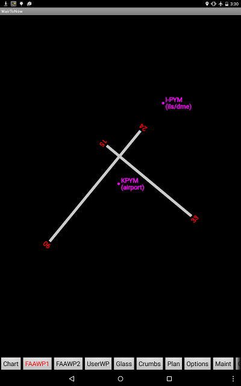

The plates are synthesized by WairToNow based on runway lat/lon information provided by the FAA. The information for some airports is incomplete so all runways may not be present on some diagrams. The diagrams are backed by tiles from OpenStreetMap appropriate to the size of the device's screen, which usually contain runway and taxiway outlines as well as nearby streets. WairToNow will draw runway numbers where the FAA has provided runway numbers and navaid markers for on-airport navaids.
Note: The OpenStretMap tiles may be out-of-date and thus the diagram will not show recent runway and taxiway changes, so use extra caution.
All airports will have a RWY-RUNWAY DIAGRAM button shown on their Waypt page, regardless of whether the corresponding plate download has been done for the state the airport is in or not. The difference is that downloading the plate information will pre-fetch the OpenStreetMap tiles backing the runway diagram. If the tiles have not been pre-fetched, WairToNow will attempt to fetch them at the time of display which requires Internet access. WairToNow will also try to use zoomed-out tiles covering the area if available. If no tiles are available, the diagram will appear with a black background.
WairToNow will use the latest GPS position received to position the airplane on the plate if the position is within the runway diagram to aid in taxiing when there is no FAA-provided Airport Diagram page available.
